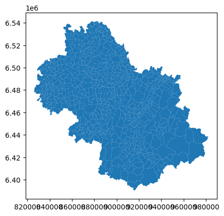
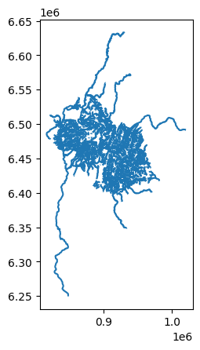
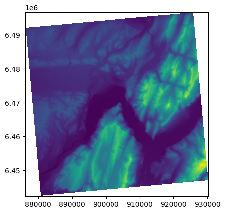
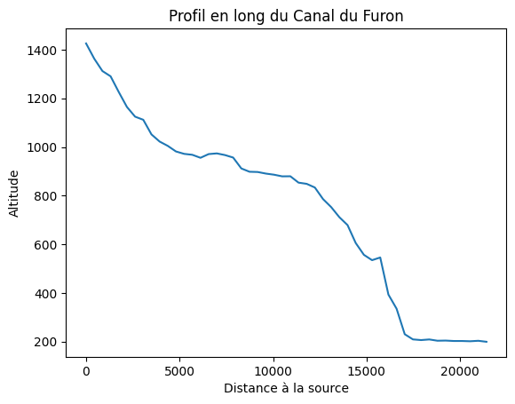
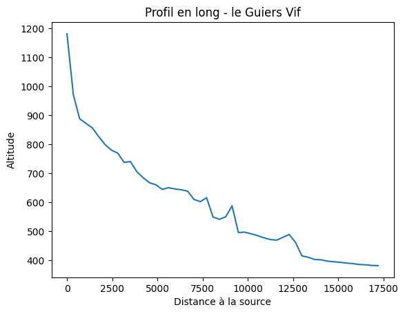
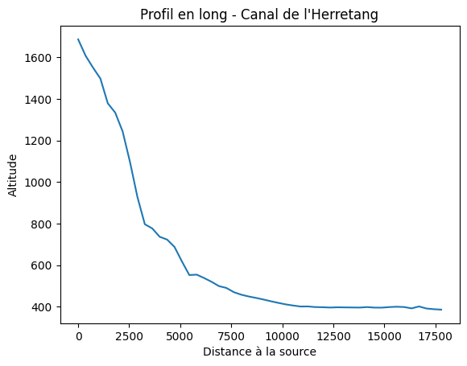
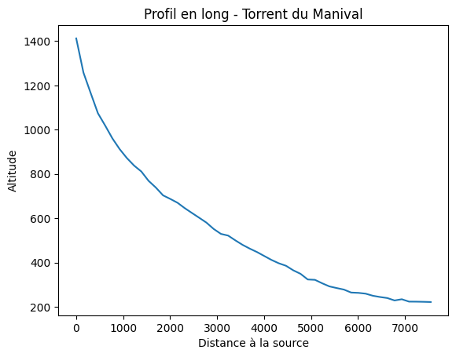
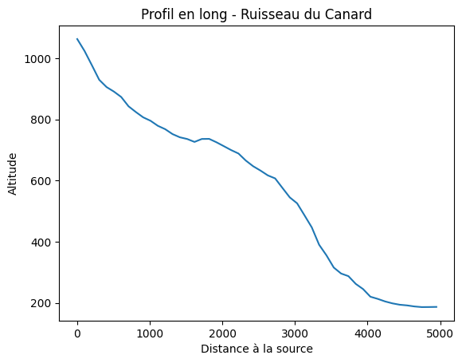
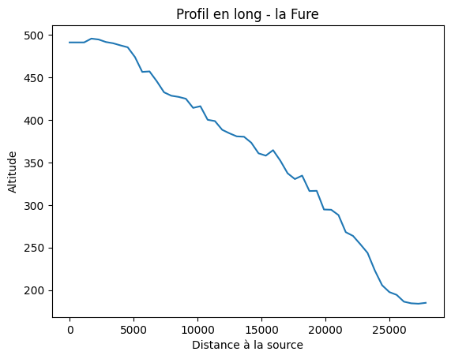

import geopandas as gpd
import rasterio as rio
import matplotlib.pyplot as plt
from rasterio.plot import showMise en pratique - Utilisation de GeoPandas et Rasterio
Import des bibliothèques nécessaires :
Import du fond de carte des communes :
communes = gpd.read_file('../data/COMMUNE.shp')
communes.head()| ID | INSEE_COM | INSEE_ARR | INSEE_COL | INSEE_DEP | INSEE_REG | POPULATION | SURFACE_HA | DATE_CREAT | DATE_MAJ | ... | CL_DEPART | CL_REGION | CAPITALE | DATE_RCT | RECENSEUR | SIREN_EPCI | ID_CH_LIEU | ID_AUT_ADM | CODE_SIREN | geometry | |
|---|---|---|---|---|---|---|---|---|---|---|---|---|---|---|---|---|---|---|---|---|---|
| 0 | COMMUNE_0000000009754200 | 38359 | 1 | 38D | 38 | 84 | 1197 | 3622 | 2006-08-02 08:36:54 | 2023-01-20 10:57:47 | ... | Non | Non | Non | 2020-01-01 | INSEE | 200070431 | PAIHABIT0000000007545622 | SURFACTI0000000007463791 | 200054526 | POLYGON ((872007.300 6454019.300, 872006.300 6... |
| 1 | COMMUNE_0000000009755669 | 38243 | 1 | 38D | 38 | 84 | 247 | 1499 | 2006-08-02 08:36:54 | 2023-02-14 10:36:40 | ... | Non | Non | Non | 2020-01-01 | INSEE | 200030658 | PAIHABIT0000000007548437 | SURFACTI0000000042499727 | 213802432 | POLYGON ((907510.800 6409545.700, 907506.100 6... |
| 2 | COMMUNE_0000000009753737 | 38239 | 1 | 38D | 38 | 84 | 7495 | 2006 | 2006-08-02 08:36:54 | 2023-01-18 18:39:43 | ... | Non | Non | Non | 2020-01-01 | INSEE | 243800984 | PAIHABIT0000000007542619 | SURFACTI0000000007463524 | 213802390 | POLYGON ((900804.200 6475473.300, 900816.800 6... |
| 3 | COMMUNE_0000000009755432 | 05064 | 2 | 05D | 05 | 93 | 105 | 10802 | 2006-08-02 08:36:54 | 2023-01-18 18:39:43 | ... | Non | Non | Non | 2020-01-01 | INSEE | 200068096 | PAIHABIT0000000075658095 | SURFACTI0000000118484062 | 210500641 | POLYGON ((950358.400 6422049.800, 950358.000 6... |
| 4 | COMMUNE_0000000009754591 | 38237 | 1 | 38D | 38 | 84 | 190 | 1460 | 2006-08-02 08:36:54 | 2023-01-18 18:39:43 | ... | Non | Non | Non | 2020-01-01 | INSEE | 243800745 | PAIHABIT0000000007546970 | SURFACTI0000000007463883 | 213802374 | POLYGON ((946870.000 6443476.500, 946851.600 6... |
5 rows × 26 columns
communes.plot()<Axes: >
Import du jeu de données des cours d’eau de l’Isère :
cours_deau = gpd.read_file('../data/COURS_D_EAU.shp')
cours_deau.head()| ID | CODE_HYDRO | TOPONYME | STATUT_TOP | IMPORTANCE | DATE_CREAT | DATE_MAJ | DATE_APP | DATE_CONF | SOURCE | ID_SOURCE | STATUT | MAREE | PERMANENT | COMMENT | geometry | |
|---|---|---|---|---|---|---|---|---|---|---|---|---|---|---|---|---|
| 0 | COURDEAU0000002215479238 | 06C0000002215479238 | Canal de Pulivès | Validé | 5 | 2020-10-21 09:35:44 | 2020-11-12 10:46:00 | None | None | None | None | Validé | None | None | None | LINESTRING (847280.500 6505594.500, 847273.400... |
| 1 | COURDEAU0000002000792297 | 06C0000002000792297 | Torrent du Clot des Cavales | Validé | 5 | 2017-01-24 16:06:18 | 2022-06-03 22:58:45 | None | None | None | None | Validé | None | None | None | LINESTRING (963060.600 6437049.700, 963068.600... |
| 2 | COURDEAU0000002215478774 | 06C0000002215478774 | le Bouveyron | Validé | 5 | 2020-10-21 09:35:44 | 2020-11-12 10:46:00 | None | None | None | None | Validé | None | None | None | LINESTRING (895311.900 6452665.700, 895271.300... |
| 3 | COURDEAU0000002000803076 | 06C0000002000803076 | Ruisseau de la Combe de Mouze | Validé | 5 | 2017-01-24 16:06:18 | 2020-09-28 10:34:31 | None | None | None | None | Validé | None | None | None | LINESTRING (878398.000 6459581.500, 878400.900... |
| 4 | COURDEAU0000002215480545 | 06C0000002215480545 | le Pachoux | Validé | 5 | 2020-10-21 09:35:44 | 2020-11-12 10:46:00 | None | None | None | None | Validé | None | None | None | LINESTRING (945273.400 6484691.600, 945299.600... |
cours_deau.plot()<Axes: >
Import du MNT de la zone de Grenoble et des alentours :
mnt = rio.open('../data/DEM_N245E395_l93.tif')
print(mnt.meta){'driver': 'GTiff', 'dtype': 'float32', 'nodata': 3.4028234663852886e+38, 'width': 2393, 'height': 2000, 'count': 1, 'crs': CRS.from_epsg(2154), 'transform': Affine(22.625939867401588, 0.0, 876147.6561479433,
0.0, -27.206653628468978, 6496734.7862259)}show(mnt)
<Axes: >Étapes nécessaires pour l’affichage du profil en long du Canal du Furon :
# On récupère une référence à l'entité avec le toponyme "Canal du Furon"
canal_furon = cours_deau[cours_deau.TOPONYME == 'Canal du Furon'].iloc[0]
# On stocke sa géomtrie dans une variable
geom_canal_furon = canal_furon['geometry']
# geom est la géométrie récupérée plus tôt
length = geom_canal_furon.length
# combien de points :
nb_points = 50
# quelle distance entre les points :
step = length / (nb_points - 1)
# Deux listes, pour stocker les distances à la source
# et les coordonnées
dists = []
coords = []
# On génère des points à `step` distance de la source,
# le long de la géométrie du cours d'eau
for dist in range(0, int(length), int(step)):
# On calcul la position du point
pt = geom_canal_furon.interpolate(dist)
# Récupération des coordonnées du points sous forme d'un tuple :
c = pt.coords[0]
# On ajoute le résultat
coords.append(c)
dists.append(dist)
# Liste qui va contenir le résultat final,
# sous forme de tuple de 2 éléments (distance à la source, altitude)
result = []
# On donne une liste de coordonnées la méthode "sample"
# de notre mnt, et on parcours le résultat
for i, value in enumerate(mnt.sample(coords)):
result.append((dists[i], value[0]))
print(result)[(0, 1425.7377), (437, 1362.941), (874, 1312.1956), (1311, 1290.5577), (1748, 1225.8474), (2185, 1164.4419), (2622, 1124.573), (3059, 1111.7539), (3496, 1051.6694), (3933, 1022.22516), (4370, 1004.3961), (4807, 981.4957), (5244, 971.6164), (5681, 967.7894), (6118, 955.43756), (6555, 970.6986), (6992, 973.53284), (7429, 966.6809), (7866, 956.42053), (8303, 911.60754), (8740, 898.0838), (9177, 897.07367), (9614, 890.5755), (10051, 885.98413), (10488, 879.15765), (10925, 879.4802), (11362, 853.3081), (11799, 848.3095), (12236, 833.22424), (12673, 785.61456), (13110, 752.5231), (13547, 711.05975), (13984, 678.70056), (14421, 604.9606), (14858, 556.44476), (15295, 534.45703), (15732, 545.5055), (16169, 393.02655), (16606, 334.85504), (17043, 229.89719), (17480, 208.64926), (17917, 205.8491), (18354, 208.43661), (18791, 203.1874), (19228, 203.81535), (19665, 202.07422), (20102, 202.07265), (20539, 200.99963), (20976, 202.91989), (21413, 198.85019)]Affichons le graphique correspondant
plt.plot([i[0] for i in result], [i[1] for i in result])
plt.title('Profil en long du Canal du Furon')
plt.xlabel('Distance à la source')
plt.ylabel('Altitude')
plt.show()
Exercice 1
Soit la variable nom_cours_deau définie ci-dessous. Copiez le code précédent et adaptez le afin de créez le profil en long du cours d’eau dont le nom est stocké dans la variable nom_cours_deau (vous devez donc utiliser cette variable pour extraire la géomtrie du cours d’eau d’intérêt, ainsi que pour définir le titre du graphique à créer).
Essayez de change la couleur de la ligne qui est dessinée si vous le souhaitez ! (indice : une recherche sur un moteur de recherche - matplotlib est une bibliothèque très populaire et il est aisé de trouver des informations à son sujet sur le Web)
nom_cours_deau = 'le Guiers Vif'Solution :
# On récupère une référence à l'entité avec le toponyme stocké dans la variable
feature = cours_deau[cours_deau.TOPONYME == nom_cours_deau].iloc[0]
# On stocke sa géomtrie dans une variable
geom = feature['geometry']
# geom est la géométrie récupérée plus tôt
length = geom.length
# combien de points :
nb_points = 50
# quelle distance entre les points :
step = length / (nb_points - 1)
# Deux listes, pour stocker les distances à la source
# et les coordonnées
dists = []
coords = []
# On génère des points à `step` distance de la source,
# le long de la géométrie du cours d'eau
for dist in range(0, int(length), int(step)):
# On calcul la position du point
pt = geom.interpolate(dist)
# Récupération des coordonnées du points sous forme d'un tuple :
c = pt.coords[0]
# On ajoute le résultat
coords.append(c)
dists.append(dist)
# Liste qui va contenir le résultat final,
# sous forme de tuple de 2 éléments (distance à la source, altitude)
result = []
# On donne une liste de coordonnées la méthode "sample"
# de notre mnt, et on parcours le résultat
for i, value in enumerate(mnt.sample(coords)):
result.append((dists[i], value[0]))
plt.plot([i[0] for i in result], [i[1] for i in result])
plt.title(f'Profil en long - {nom_cours_deau}')
plt.xlabel('Distance à la source')
plt.ylabel('Altitude')
plt.show()
Exercice 2
Soit la variable noms définie ci-dessous. Elle contient une liste de noms de cours d’eau. Faites une boucle parcourant cette liste afin de créez le profil en long de chacun des cours d’eau qui y figure.
Grâce à l’exemple fourni et grâce à l’exercice 1, vous devrez avoir identifié quelle partie du code peut-être réutilisé. N’hésitez pas à l’emballer dans une fonction que vous pourrez nommer affiche_profil et qui prendra un argument, le nom du cours d’eau.
noms = [
'le Guiers Vif',
'Canal de l\'Herretang',
'Torrent du Manival',
'Ruisseau du Canard',
'la Fure',
]Solution :
def affiche_profil(nom_cours_deau):
# On récupère une référence à l'entité avec le toponyme stocké dans la variable
feature = cours_deau[cours_deau.TOPONYME == nom_cours_deau].iloc[0]
# On stocke sa géomtrie dans une variable
geom = feature['geometry']
# geom est la géométrie récupérée plus tôt
length = geom.length
# combien de points :
nb_points = 50
# quelle distance entre les points :
step = length / (nb_points - 1)
# Deux listes, pour stocker les distances à la source
# et les coordonnées
dists = []
coords = []
# On génère des points à `step` distance de la source,
# le long de la géométrie du cours d'eau
for dist in range(0, int(length), int(step)):
# On calcul la position du point
pt = geom.interpolate(dist)
# Récupération des coordonnées du points sous forme d'un tuple :
c = pt.coords[0]
# On ajoute le résultat
coords.append(c)
dists.append(dist)
# Liste qui va contenir le résultat final,
# sous forme de tuple de 2 éléments (distance à la source, altitude)
result = []
# On donne une liste de coordonnées la méthode "sample"
# de notre mnt, et on parcours le résultat
for i, value in enumerate(mnt.sample(coords)):
result.append((dists[i], value[0]))
plt.plot([i[0] for i in result], [i[1] for i in result])
plt.title(f'Profil en long - {nom_cours_deau}')
plt.xlabel('Distance à la source')
plt.ylabel('Altitude')
plt.show()for nom in noms:
affiche_profil(nom)


